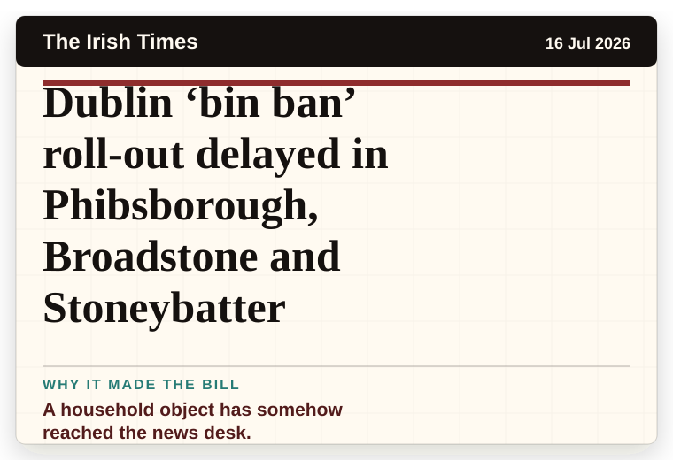
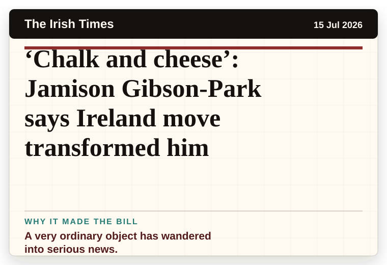
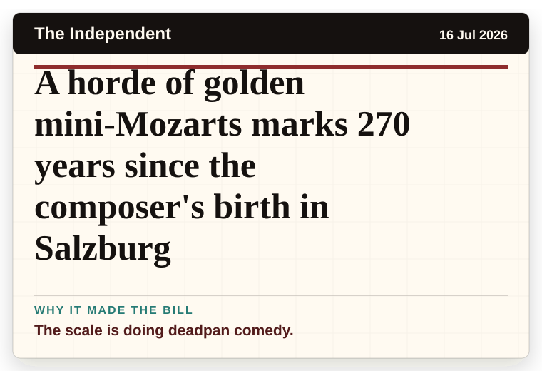
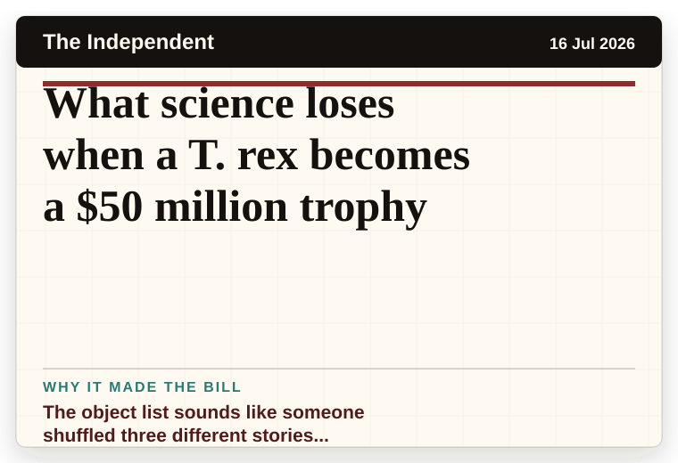
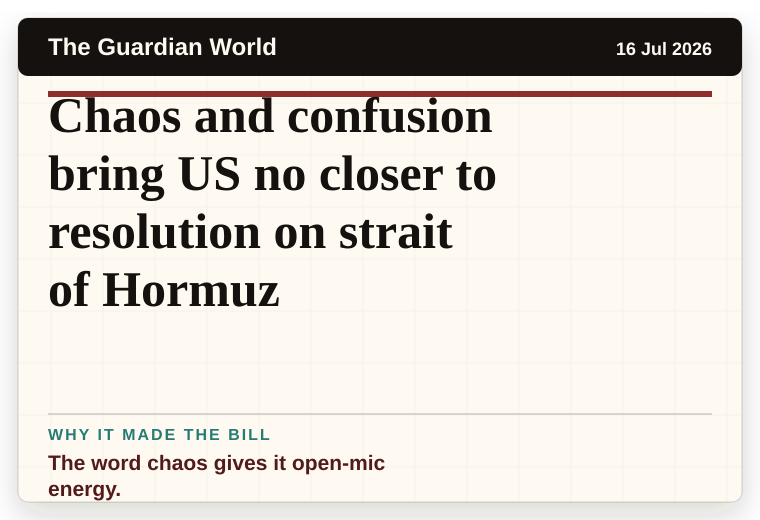
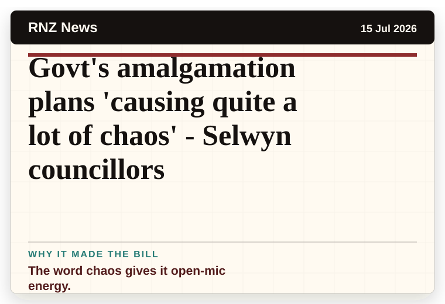
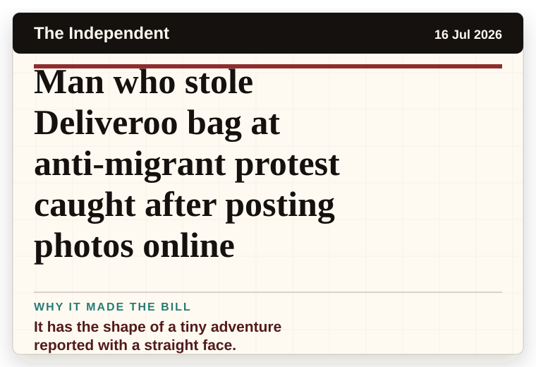

Mirror Weird News
United Kingdom
Argentina's Lionel Messi uses sleep method and unusual drink for peak fitness
The headline is already trying not to laugh.
The latest daily picks, linked back to the original sources. Search the room, pick a source, or follow a headline out to the full story.
Record updated: 16 Jul 2026, 07:52 AM AEST
Showing 18 headline candidates from the refresh run completed on 16 Jul 2026, 07:52 AM AEST.
The headline is already trying not to laugh.

A household object has somehow reached the news desk.

It has the shape of a tiny adventure reported with a straight face.

It has that classic official-plan-meets-real-life shape.

The scale is doing deadpan comedy.

A wonderfully specific detail has taken centre stage.

A very ordinary object has wandered into serious news.

A mystery is doing a lot of work in a very small sentence.

The scale is doing deadpan comedy.

A household object has somehow reached the news desk.

It has the magic news word: accidentally.

A very ordinary object has wandered into serious news.

The scale is doing deadpan comedy.

The object list sounds like someone shuffled three different stories together.

The word chaos gives it open-mic energy.

The word chaos gives it open-mic energy.

It has the shape of a tiny adventure reported with a straight face.

It has the shape of a tiny adventure reported with a straight face.